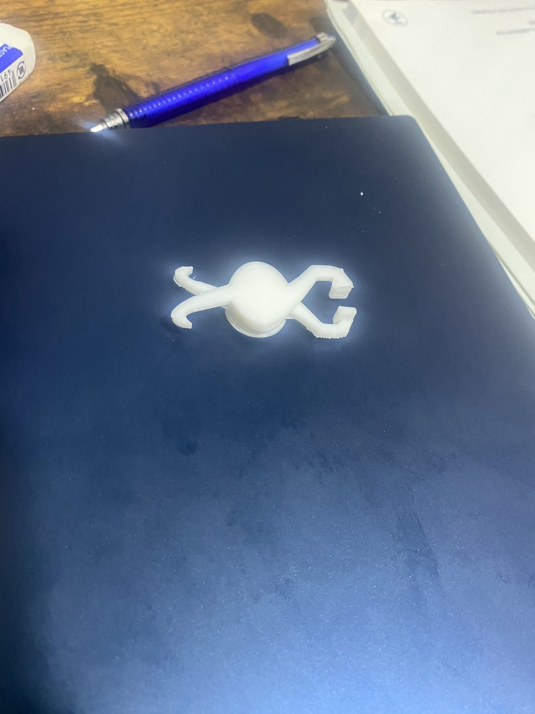

まず試しに3Dプリンターを使ってみようということで簡単な形のピンセットを作ってみた
（お試しだったため保存し忘れていました( ﾉД`)）
次に少しアレンジを加えてシンメトリーなデザインのピンセットを作りました。
stlファイル
やはり左右につまみ口をつけると全体的に小さくなりました。
丈夫さが実物を見ていなくてもわかりますね。これはあまりにも普通すぎるなと感じたため
別のものを作ることにした。
構想１
ピンセットでも自分専用のピンセットを作ってみてはどうかと考えた。
自分専用すなわち自分の指のサイズを図ってそれにピタリと当てはまるピンセットを作ろう考えた。
なぜこのピンセットを製作しようと思ったか。
それは進化によってそれぞれ自分専用のピンセットが生まれた未来を思いついたためである。
しかしここで問題が起きた。課題のピンセットに大きさの指定があったのだ。
よってこの段階での構想はチャラになった。
構想２
前回で大きさのミスがあったため3DCADの段階で指定サイズの枠内に製作するという手法で作った。
そこで思いついたものがハサミのような形状のピンセットもありなのではないかと考えた。
（上にクローバー型のピンセットとあるがこれも大きさ問題で却下になった）
このピンセットを作ろうと考えた経緯は何か特徴のあるピンセットはないかと考えたとき、ふと思いついたのが
押しんで使うようなものではなくまた別の方法でつかむことはできないかと考えたとき頭に浮かんだのが
ハサミやペンチのようなものであった。
そして作成したのがこれである。
これは部品段階のピンセットである。
形としてはハサミの形状と同じように二つの持ち手を作って間に固定具をつけるというものにした。
持ち手が音符のような形で製作段階ではそのような形にするつもりはなく、奇跡の代物である。
非常に気に入っています。

stlファイル（持ち手部分）
stlファイル（固定具）
ハサミ風ピンセット
これが完成したピンセットである。指定サイズが小さいため持ちてのような部分に指を固定することがなかなか難しく
両手でしか使えない逆に使いにくいピンセットになってしまった。しかしデザインは気に入ってます。
いつか自分に納得のいくサイズでつくってみたいと感じた。
試用動画（使い安さは皆無です）